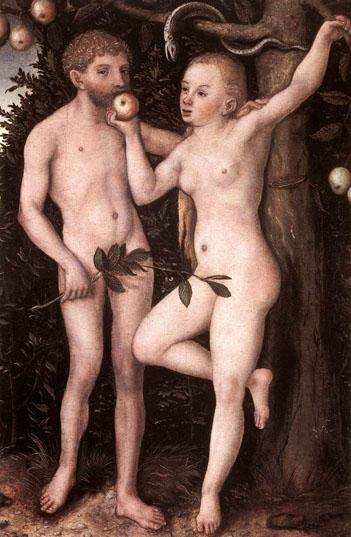

Adam and Eve (1538)
[a] Artist/ Group/Tribe
The painting "Adam and Eve" was created by Lucas Cranach the Elder, a prominent German Renaissance painter. Cranach was known for his works that focused on both religious and mythological themes. As a court painter to the Elector of Saxony, his works contributed to the visual culture of the Reformation.
[b] Historical and Socio-Cultural Context (Time-frame)
Produced in 1538, Cranach's "Adam and Eve" is situated within the Northern Renaissance, a period marked by the religious turmoil of the Protestant Reformation. This era saw a shift in artistic expression reflecting the changing theological paradigms, with art being utilized to communicate religious narratives.
[c] Symbolism and/ or Iconography
The painting depicts the biblical story of the Fall of Man, symbolizing the theme of temptation and original sin. The serpent and the apple are potent symbols within the work; the serpent hanging from the tree alludes to Satan, while the apple Eve holds represents the forbidden fruit.
[d] Stylistic Significance (Elements of Art/ Principles of Design)
Cranach's use of fine lines, delicate forms, and muted colors reflects the elegance of the Northern Renaissance. The composition is balanced, with Adam and Eve’s figures forming a harmonious contraposto. The detailed textures of the figures contrast the more subdued background, drawing attention to their actions.
[e] Social / Cultural Inequities
The painting subtly reflects societal attitudes of the time, particularly the concept of Eve as the temptress, which perpetuated gender stereotypes prevalent in 16th-century Europe. This reflects broader themes of the time regarding women's roles and influence in religious narratives.
[f] Description of Disease & Etiology
In a metaphorical sense, the painting can be interpreted to symbolize ‘spiritual disease,’ an affliction of the soul that embodies the human condition post-Fall. This allegorical ailment suggests the inherited nature of sin as a condition pervading humanity.
[g] Pathology Signs/Signifiers of Illness
As a representation of moral corruption, the ‘pathology’ indicated in the artwork comes through the figures' actions. The act of reaching for the forbidden fruit is a signifier of the spiritual downfall leading to the subsequent ‘illness’ of estrangement from divine purity.
[h] Treatment
The treatment for the depicted moral lapse resides within the framework of Christian theology: redemption and salvation through faith. During the Reformation, this theme was particularly resonant as reformers emphasized personal piety and scripture as the antidote to spiritual decay.
[i] Social Determinants of Illness
The social determinants of this metaphorical illness are tied to theological beliefs and church doctrine during the Renaissance. The emphasis on original sin influenced societal attitudes towards morality, culpability, and redemption, shaping the cultural discourse surrounding human nature.
[j] References and Citations
1. Smith, Jeffrey Chipps. "The Northern Renaissance." Phaidon Press, 2004.
2. Koerner, Joseph Leo. "The Reformation of the Image." University of Chicago Press, 2004.
3. Dürer, Albrecht. "The Complete Drawings." Taschen, 2013.
4. Roskill, Mark W. "Renaissance Vision from Spectacles to Telescopes." UMI Research Press, 1975.
5. Eichberger, Dagmar. "Dürer and Cranach: Art and Humanism in Renaissance Germany." Lumens Academic Publishing, 2010.